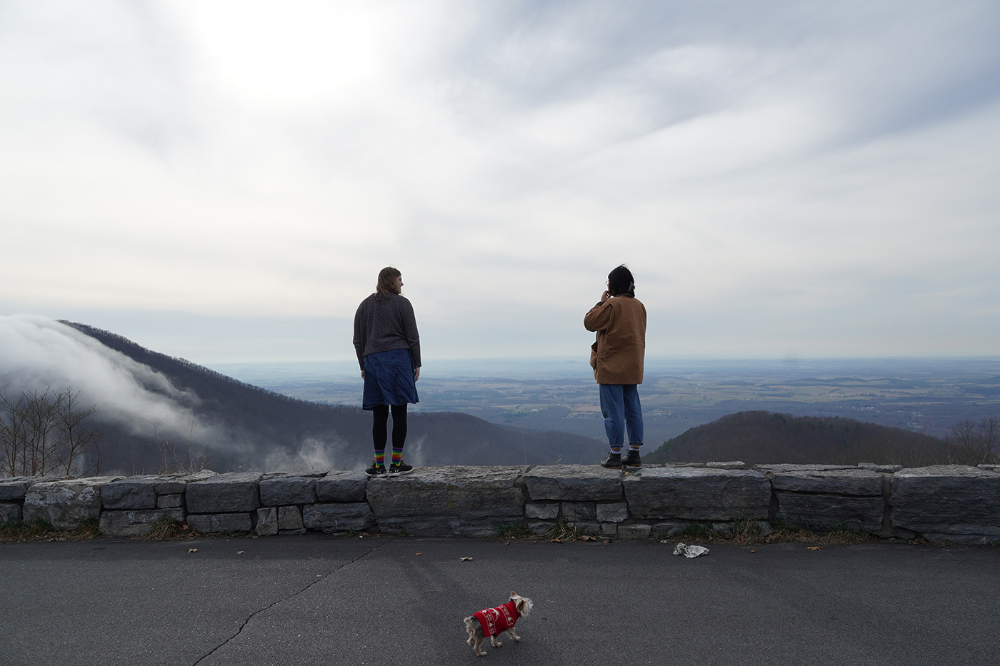
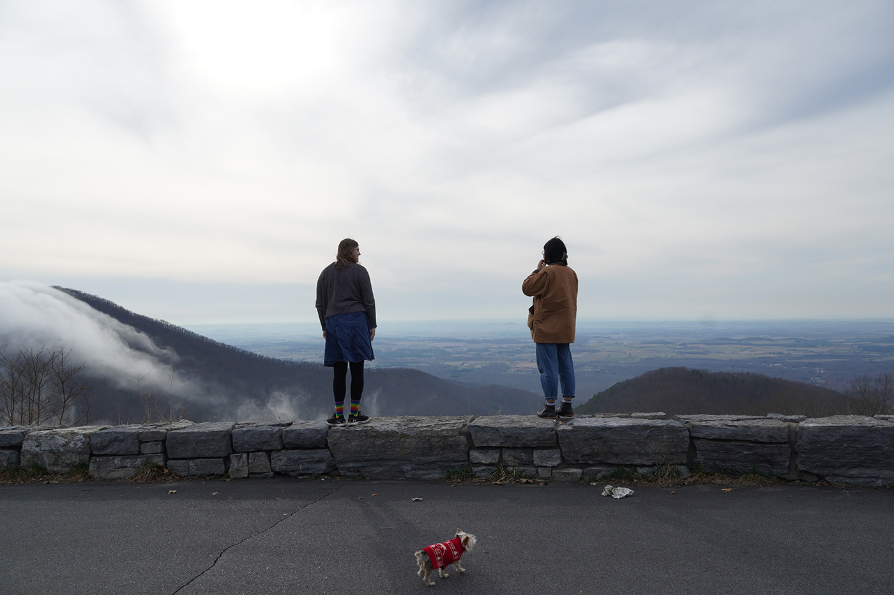
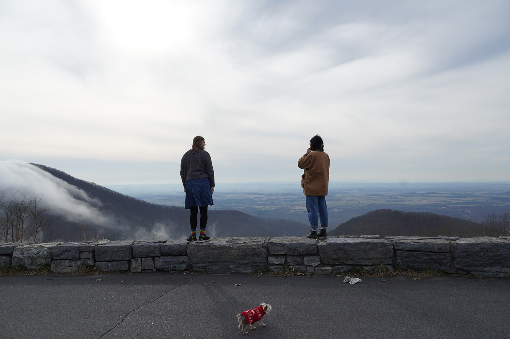
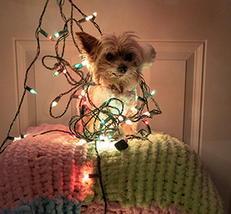
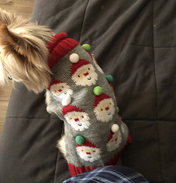
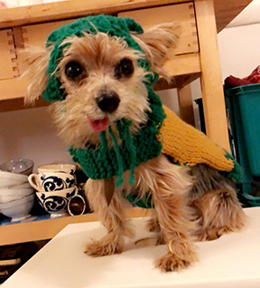

Victorio was born on September 2nd, 2009 as "Lancelot 'The Fallow' Sweet" in a breeder in Buenos Aires, Argentina. He was bought by Vincent Petroni’s grandmother, Doris, as a gift to Vincent and his sister Val. Doris renamed him Victorio and he became Vincent’s dog. Val got gifted another yorkie named Tina, who was born May 2009. Since then, Tina and Victorio were inseparable.
They moved to the U.S. with the Petroni family and since then Victorio has lived 12 years with Vincent. Val and Vincent helped take care of both dogs until Tina passed away in January 2019.
Since then, Victorio and Vincent have gone through a lot together, even starting college! Val still sees Victorio often, but he has been deemed Vincent’s responsibility.
Vincent couldn’t leave Victorio with his parents because they simply couldn’t take care of the dog. So, when moving to college he found a house off-campus and persuaded the landlords to allow a pet into the lease. Now Victorio and Vincent have been living at the same off-campus house for 2 years and hope to continue living there for the next 2, currently leasing the 3rd year.
Vincent made Victorio promise that since Victorio started college with Vincent, Victorio now has to graduate with him.
When Vincent got a car, Victorio and him began to go on various aventures across the country.
Some adventures that Victorio and Vincent have gone on include (in timeline order):

Since 2009, Victorio has gotten a lot of nicknames along the way. Here are some:
Alternatively:
Similarly:
Victorio has acquired many outfits. Here are some fan favorites:
 |
 |
 |  | |
|  |  |
 |
More on Page 2: Victorio's Special Notes
You can follow Vincent's social media to find more photos and posts about Victorio and his adventures!
Here is the instagram
Here is a link for more information on tea cup yorkies if you wanted to get one yourself.